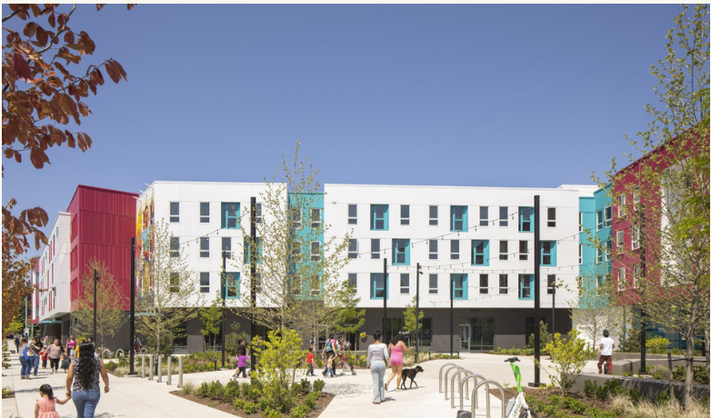
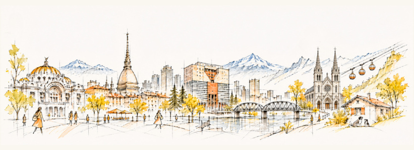
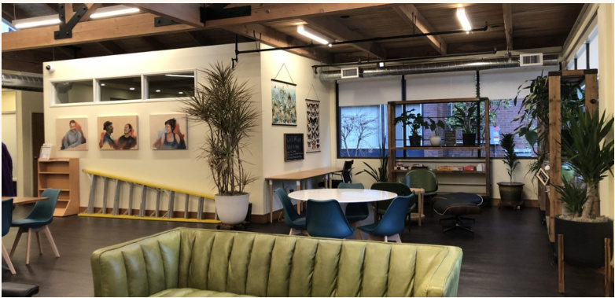
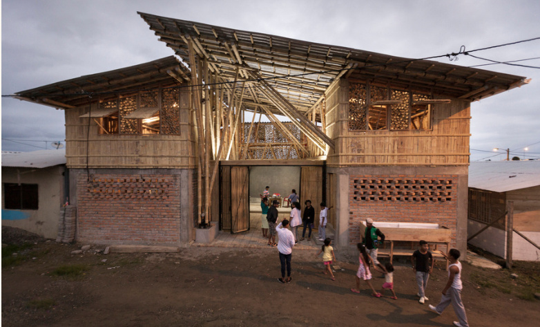
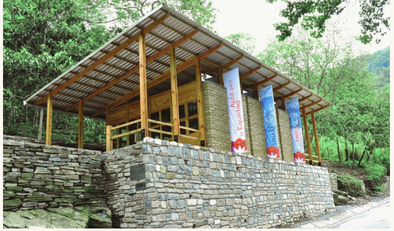
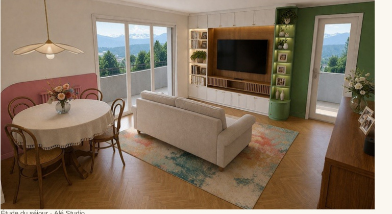
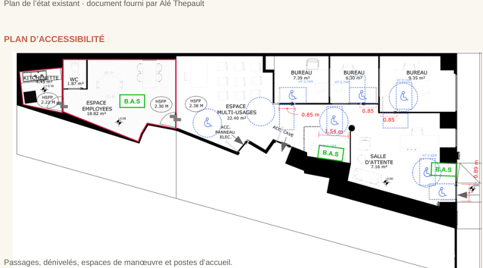

Logement social
Las Adelitas
142 logements abordables. Études, permis, plans d’exécution et coordination BIM.
Salazar Architect Inc. · © Lara Swimmer / Esto
Conception architecturale · Développement technique · Maîtrise d’œuvre
Formée au Mexique et aux États-Unis, je relie conception, production graphique, développement technique et dialogue avec les usagers. Je souhaite rejoindre une équipe pour contribuer aux études, à la coordination et à la réalisation des projets.

México · Torino · Portland · Voiron
01 / Projets sélectionnés

Logement social
142 logements abordables. Études, permis, plans d’exécution et coordination BIM.
Salazar Architect Inc. · © Lara Swimmer / Esto

Réhabilitation
103 logements en site occupé. Accessibilité, sécurité et espaces communs.
Salazar Architect Inc.

Architecture communautaire
Conception et codirection du chantier participatif de la première phase.
CPID · © Santiago Oviedo

Éducation
Concertation, conception, plans d’exécution et participation au chantier.
UNAM / CONAFE

Architecture intérieure
Rénovation de 70 m² : conception, DCE et coordination des artisans.
Alé Studio · Étude du séjour

ERP
Plans d’accessibilité et de sécurité incendie en phase APD.
Conception : Charlotte Basque / Basque Studio
02 / Parcours
L’échelle a changé, mais je retrouve le même fil : comprendre les usages, dessiner, échanger et accompagner la mise en œuvre. Le croquis ouvre la discussion. Les plans et les détails permettent ensuite de construire ce qui a été imaginé ensemble.
Master of Architecture · Portland State University
Diplôme d’architecture · UNAM
Certificat en Public Interest Design · PSU
Revit · AutoCAD · SketchUp · Enscape · Adobe Creative Cloud · Sefaira
Français · English · Español · Italien compris
03 / Contact
Basée en Isère, je souhaite retrouver une pratique collective en agence.